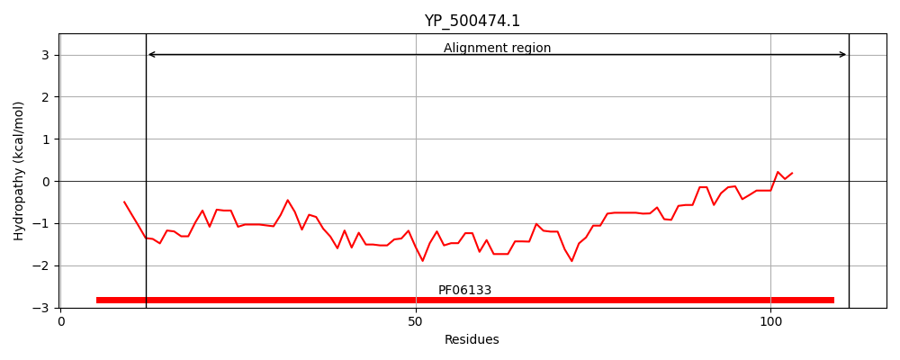

Hit Accession: BAK19943
Hit TCID: 3.A.2.1.10
Hit Description: gnl|BL_ORD_ID|2231 gnl|TC-DB|BAK19943|3.A.2.1.10 ApH+ATPase b subunit [Aphanothece halophytica]
Mach Len: 107
e:0.000152
Query TMS Count : 0
Hit TMS Count: 1
TMS-Overlap Score: 0.000000
Predicted Substrates:None
BLAST Alignment:
| Protein Hydropathy Plots: | |
|---|---|
|  | |
Pairwise Alignment-Hydropathy Plot: | |